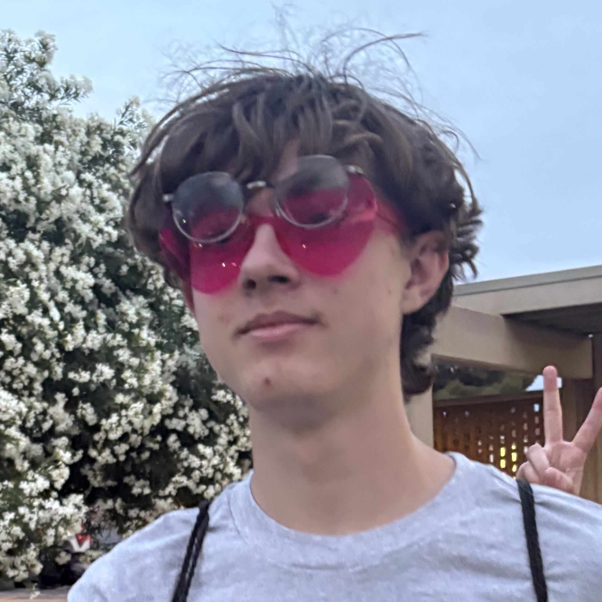

|  |
Good day, I am Canden Barnett. I am a rising senior at Houston High School in Germantown, Tennessee, USA. I personally enjoy studying physics, particularly quatnum physics and astronomy. Additionally, I enjoy spending time with my friends whether in person or online through games such as Phasmophobia, Roblox, and R.E.P.O. I desire to acquire a degree in some field of engineering so I can help alleviate challenges that people may have. |